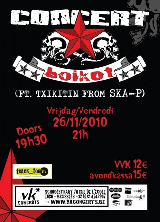

Hoy os hablamos de un concierto que tendrá lugar esta semana en Bruselas y que no os podéis perder. Boikot es un grupo madrileño que mezcla Ska, Punk y música de los balcanes en un cóctel perfecto para montarse una gran fiesta. El grupo qué, aunque viejo -comenzó su andadura en los años 80-, suena muy nuevo y actual y ahora está de gira por todo el mundo. Japón, Turquía, Grecia, Alemania… y por fin nos toca le toca a Bélgica, por lo que es una gran oportunidad que no os podéis perder. Además, de jóker, se traen al Txikitín , el excéntrico trompetista del ya antológico grupo “SKA-P”.
Donde? En la sala VK . 76, Rue de l’Ecole. 1080 Bruselas
Cuándo? El viernes 26 de noviembre a las 21h.
Podéis conseguir las entradas en la FNAC, CAROLINE MUSIC o mandando un mail a info@amawtafestival.org
El concierto en Facebook.
PD: este mensaje nos lo ha mandado Iván. Si queréis compartir con la comunidad de BlogBruselas, no tenéis más que mandarnos la entrada escrita para el blog (no valen corta pegas de comunicado de prensa).

{kind=link}
{kind=link}